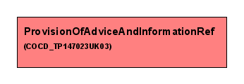

Thu Feb 21 12:28:35 GMT 2008
Description: :
Care Plan Component Information Support Reference Templates
Constraint :- For a reference to be used within a domain, the template referred to must be utilised within that domainTemplate Id Constraint: NPFIT-000022#ActRef
Version: 1.0
